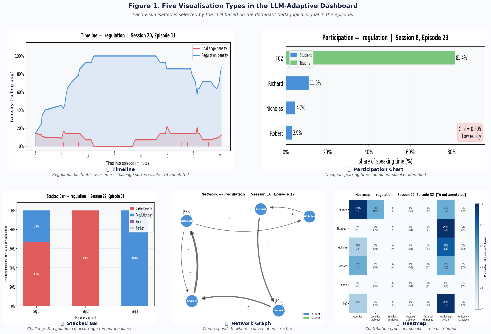

Selected projects
[image: satellite tile with predicted forest-loss mask]

MSc project · 2026
Deforestation Detection in Cameroon
An Attention U-Net that maps forest loss in the Congo Basin from Sentinel-2 imagery, trained on a dataset I built from scratch in Google Earth Engine because no suitable public one existed.
Adding the near-infrared band and a rare-class loss function helped the model pick up small, fragmented clearings the baseline missed.
PyTorchComputer visionGoogle Earth EngineRasterio
[image: screenshot of the dashboard]

MSc project · First-author workshop paper · 2026
LLM-Driven Adaptive Dashboard for Teachers
A Streamlit dashboard where Llama 3.3 70B reads features from a classroom group discussion, picks the chart a teacher would find most useful, and explains why. Built on 882 real classroom discussions.
Independent raters judged the model's chart choices largely appropriate (1.55 / 2), with substantial agreement.
LLMsStreamlitFeature engineeringData visualisation
[image: screenshot of a tutoring conversation]

MSc project · 2026
AI GCSE Biology Tutor
An AI tutor that guides students to the answer with questions instead of giving it away, personalised to five learner profiles and grounded in real exam questions through retrieval-augmented generation.
Outperformed a standard chatbot on every test query, and was checked with a gender-bias audit.
RAGLLMsPython
[image: photo of the printed robotic arm]

BEng final project · 2025
3-DoF Robotic Arm for Strawberry Handling
A lightweight arm designed to carry a soft granular-jamming gripper for automated strawberry packaging. Modelled in SolidWorks, analysed in MATLAB, and 3D printed over two prototypes.
The final 0.35 kg arm reached 3.95 mm mean positioning error and reliably lifted the gripper.
SolidWorksMATLAB3D printingDYNAMIXEL